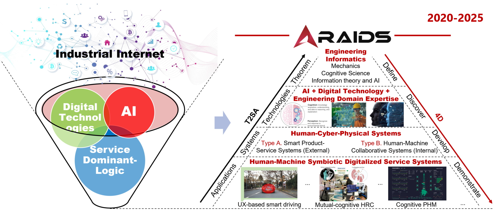
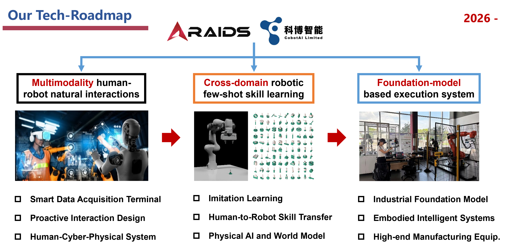

Vision
Towards NEXT-Generation Human-Machine Symbiotic Manufacturing Systems, Equipment & Scenarios
Researchers of AI for Industrial Digital Servitization
By embracing the cutting-edge AI, digital technologies, and smart robotic solutions, RAIDS group held the grand vision and mission to establish the human-robot collaborative and embodied intelligent manufacturing systems, where human beings and robots can naturally interact, cost-effectively collaborate and even dynamically co-evolve as a socio-technical ecosystem.
The Research Group of AI for Industrial Digital Servitization (RAIDS) was established in 2020 at The Hong Kong Polytechnic University.
Towards NEXT-Generation Human-Machine Symbiotic Manufacturing Systems, Equipment & Scenarios
SURE: Solid, Unique, Radical, Elite.
To develop advanced robotic solutions, digitalized services, and AI agents for more natural human-machine interaction, efficient multi-robot/human-robot collaboration, and industrial embodied intelligence implementation.


Recent milestones from the group and our community.
Member, HKAE Young Member Session
Hong Kong Academy of Engineering (HKAE YMS) · Prof. Pai Zheng
CMES delegation visit
Chinese Mechanical Engineering Society (CMES)
Best Student Paper Award
11th CIRP Conference on Assembly Technologies and Systems (CATS) · Hosted by RAIDS
Fellow
American Society of Mechanical Engineers (ASME) · Prof. Pai Zheng
Learn more about our work across the lab.
Worldwide reach of the RAIDS site.
Site visitors: …